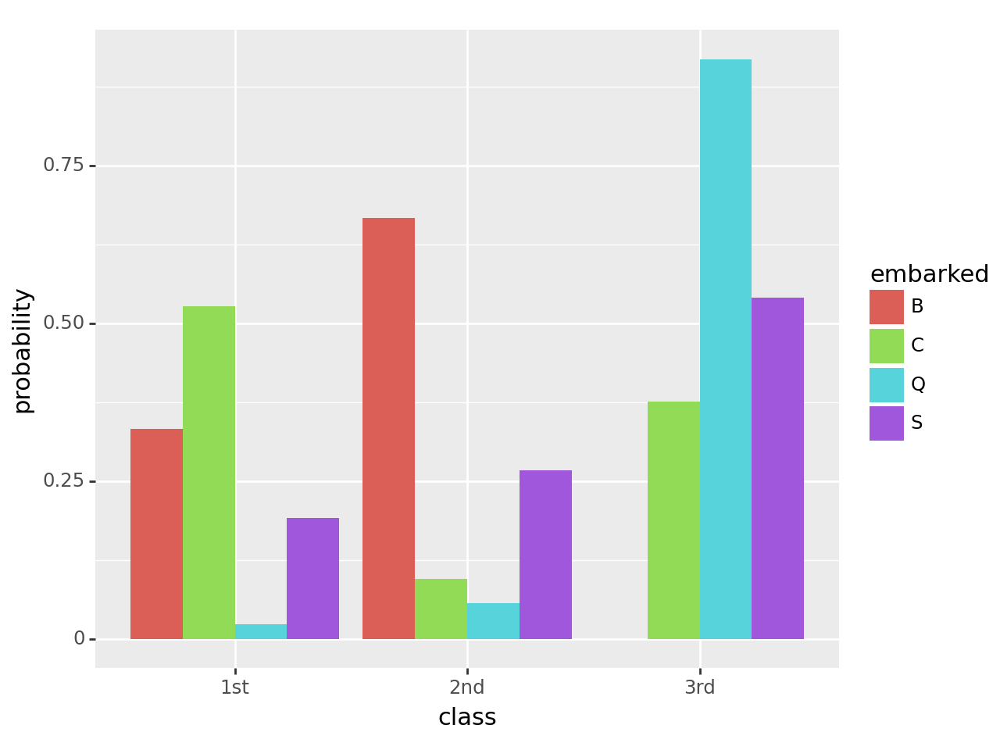

Code
import pandas as pd
import numpy as np
# Import the titanic dataset here
data_dir = "https://dlsun.github.io/pods/data/"
df_titanic = pd.read_csv(data_dir + "titanic.csv")In this practice activity you’ll continue to work with the titanic dataset in ways that flex what you’ve learned about both data wrangling and data visualization.
import pandas as pd
import numpy as np
# Import the titanic dataset here
data_dir = "https://dlsun.github.io/pods/data/"
df_titanic = pd.read_csv(data_dir + "titanic.csv")df_titanic["class"].unique()array(['3rd', '2nd', '1st', 'engineering crew', 'victualling crew',
'restaurant staff', 'deck crew'], dtype=object)# Code here
df_titanic_passengers = df_titanic[(df_titanic["class"] == '3rd') | (df_titanic["class"] == '2nd') | (df_titanic["class"] == '1st')]
df_titanic_passengers| name | gender | age | class | embarked | country | ticketno | fare | survived | |
|---|---|---|---|---|---|---|---|---|---|
| 0 | Abbing, Mr. Anthony | male | 42.0 | 3rd | S | United States | 5547.0 | 7.1100 | 0 |
| 1 | Abbott, Mr. Eugene Joseph | male | 13.0 | 3rd | S | United States | 2673.0 | 20.0500 | 0 |
| 2 | Abbott, Mr. Rossmore Edward | male | 16.0 | 3rd | S | United States | 2673.0 | 20.0500 | 0 |
| 3 | Abbott, Mrs. Rhoda Mary 'Rosa' | female | 39.0 | 3rd | S | England | 2673.0 | 20.0500 | 1 |
| 4 | Abelseth, Miss. Karen Marie | female | 16.0 | 3rd | S | Norway | 348125.0 | 7.1300 | 1 |
| ... | ... | ... | ... | ... | ... | ... | ... | ... | ... |
| 1314 | Yvois, Miss. Henriette | female | 24.0 | 2nd | S | France | 248747.0 | 13.0000 | 0 |
| 1315 | Zakarian, Mr. Mapriededer | male | 22.0 | 3rd | C | Turkey | 2656.0 | 7.0406 | 0 |
| 1316 | Zakarian, Mr. Ortin | male | 27.0 | 3rd | C | Turkey | 2670.0 | 7.0406 | 0 |
| 1317 | Zenni, Mr. Philip | male | 25.0 | 3rd | C | Lebanon | 2620.0 | 7.0406 | 1 |
| 1318 | Zimmermann, Mr. Leo | male | 29.0 | 3rd | S | Germany | 315082.0 | 7.1706 | 0 |
1317 rows × 9 columns
joint = pd.crosstab(df_titanic_passengers["class"],df_titanic_passengers["embarked"])
joint| embarked | B | C | Q | S |
|---|---|---|---|---|
| class | ||||
| 1st | 3 | 143 | 3 | 175 |
| 2nd | 6 | 26 | 7 | 245 |
| 3rd | 0 | 102 | 113 | 494 |
Use the conditional distributions that you calculate to answer the following quesitons:
embarked_conditional = pd.crosstab(df_titanic_passengers["embarked"],df_titanic_passengers["class"])
embarked_conditional["total"] = df_titanic_passengers["embarked"].value_counts()
for i in range(len(embarked_conditional[embarked_conditional.columns[0]])): #Looks weird, but I'm simply grabbing the first column index label in the list of labels and getting the length of that column; assumes all columns are equal length
row = embarked_conditional.iloc[i] #Get the row
newrow = row / embarked_conditional.iloc[i][-1] #Divide the row by the total count to get conditional probabilities along each row
embarked_conditional.iloc[i] = newrow #Commit the changes to the original dataframe
print(embarked_conditional)
class_conditional = pd.crosstab(df_titanic_passengers["class"],df_titanic_passengers["embarked"])
class_conditional["total"] = df_titanic_passengers["class"].value_counts()
for i in range(len(class_conditional[class_conditional.columns[0]])): #Looks weird, but I'm simply grabbing the first column index label in the list of labels and getting the length of that column; assumes all columns are equal length
row = class_conditional.iloc[i] #Get the row
newrow = row / class_conditional.iloc[i][-1] #Divide the row by the total count to get conditional probabilities along each row
class_conditional.iloc[i] = newrow #Commit the changes to the original dataframe
print(class_conditional)class 1st 2nd 3rd total
embarked
B 0.333333 0.666667 0.000000 1
C 0.527675 0.095941 0.376384 1
Q 0.024390 0.056911 0.918699 1
S 0.191466 0.268053 0.540481 1
embarked B C Q S total
class
1st 0.009259 0.441358 0.009259 0.540123 1
2nd 0.021127 0.091549 0.024648 0.862676 1
3rd 0.000000 0.143865 0.159379 0.696756 1embarked_conditional2 = pd.crosstab(df_titanic_passengers["embarked"],df_titanic_passengers["class"], normalize = 'index')
print(embarked_conditional2)
class_conditional2 = pd.crosstab(df_titanic_passengers["embarked"],df_titanic_passengers["class"], normalize = 'columns')
class_conditional2class 1st 2nd 3rd
embarked
B 0.333333 0.666667 0.000000
C 0.527675 0.095941 0.376384
Q 0.024390 0.056911 0.918699
S 0.191466 0.268053 0.540481| class | 1st | 2nd | 3rd |
|---|---|---|---|
| embarked | |||
| B | 0.009259 | 0.021127 | 0.000000 |
| C | 0.441358 | 0.091549 | 0.143865 |
| Q | 0.009259 | 0.024648 | 0.159379 |
| S | 0.540123 | 0.862676 | 0.696756 |
Southampton is S for embarked, so we look at given the class is 3rd, how many were from Southampton. This is the second table at 3rd and S. So, about 69.7% of the 3rd class passengers embarked from Southampton.
The proportion of 3rd class given they were from Southampton is the same but in our first table. So, about 54% of Southampton people were 3rd class passengers.
#This will change the row indexing, but turn the current indexing by embarked into it's own column to be able to melt with
embarked_conditional2.reset_index(inplace=True)
#Found from https://datatofish.com/index-to-column-pandas-dataframe/
long_df = embarked_conditional2.melt(id_vars=["embarked"], var_name="class", value_name="probability")
long_df| embarked | class | probability | |
|---|---|---|---|
| 0 | B | 1st | 0.333333 |
| 1 | C | 1st | 0.527675 |
| 2 | Q | 1st | 0.024390 |
| 3 | S | 1st | 0.191466 |
| 4 | B | 2nd | 0.666667 |
| 5 | C | 2nd | 0.095941 |
| 6 | Q | 2nd | 0.056911 |
| 7 | S | 2nd | 0.268053 |
| 8 | B | 3rd | 0.000000 |
| 9 | C | 3rd | 0.376384 |
| 10 | Q | 3rd | 0.918699 |
| 11 | S | 3rd | 0.540481 |
Discuss the pros and cons of using this visualization versus the distributions you calculated before, to answer the previous questions.
from plotnine.scales import scale_fill_manual
from plotnine import ggplot,aes,geom_col,scale_x_continuous,scale_y_continuous, scale_size, annotate
(ggplot(long_df, aes(x = "class", y= "probability",fill="embarked"))
+geom_col(stat='identity', position='dodge') #Got this from https://plotnine.readthedocs.io/en/stable/generated/plotnine.geoms.geom_col.html
)
<Figure Size: (640 x 480)>For specifically the distribution of class type conditionally on the embark location, this chart does a very good job at immediately providing the information, at least roughly. It is still less precise than the table, as the actual values have to be estimated from the y-axis tick labels which can be hard for some of them. We could do a similar plot with the other data on embarked given the class and then be able to answer the same questions as before but with the plots rather than the tables.